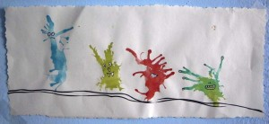
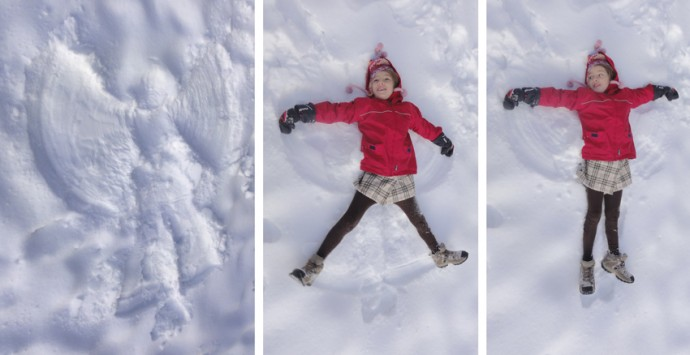
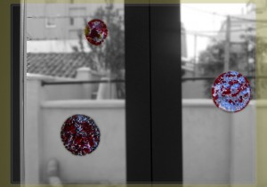

Pinterest
Instagram
ES
EN
DE
☰ Menü
Home
Das Haus
Zubehör
Dekoration
Faltanleitung
Illustration
Trinkflaschen
Bastelheft
App
Blog
Feste
Weihnachten
Ostern
Halloween
Fasching & Kostüme
Valentinstag
Geburtstag
Mutter-/Vatertag
Schulanfang
Jahreszeiten
Frühling
Sommer
Herbst
Winter
Was machen
Spielzeug
Spiele
Druckvorlagen
Essen & Rezepte
Dekoration
Malen
Experimente
Draußen
Lernen
Tiere
Geschenke & Schmuck
Bauen & Tricks
Weitere Ideen
Material
Papier
Karton
Papierrollen
Recycling
Steine
Blätter & Natur
Stoff & Nähen
Start
›
Blog
Blog
Feste
Weihnachten
68
Ostern
41
Halloween
26
Fasching & Kostüme
36
Valentinstag
15
Geburtstag
13
Mutter-/Vatertag
4
Schulanfang
10
Jahreszeiten
Frühling
19
Sommer
42
Herbst
22
Winter
32
Was machen
Spielzeug
79
Spiele
125
Druckvorlagen
47
Essen & Rezepte
95
Dekoration
94
Malen
64
Experimente
19
Draußen
64
Lernen
67
Tiere
111
Geschenke & Schmuck
89
Bauen & Tricks
81
Weitere Ideen
46
Material
Papier
92
Karton
61
Papierrollen
23
Recycling
121
Steine
33
Blätter & Natur
52
Stoff & Nähen
42
Aktivität
Eulen und eine Katze aus Klorollen
Aktivität
Pustemonster

Aktivität
Rosinen-Wettpieksen
Material
Vogelhäuschen aus Tetrapak
Weihnachten
¡Feliz año nuevo! Happy new year! Frohes neues Jahr!
Winter
Schneeengel

Aktivität
Eine größere Burg aus Karton
Papier
Papierengel ohne Kleber
Weihnachten
Weihnachtsmann aus Ästen
Nuss
Nachricht in einer Nuss
Stoff
Kleine Filzbäume
Aktivität
Wachskreise

Aktivität
Rudolphs Familie
Weihnachten
Alles in Gold
Nuss
Erdnusswichtel
Karton
Weihnachtsbaum aus Karton
Weihnachten
Das Hexenhäuschen
Material
Pfau aus Blättern
Aktivität
Geflochtene Herzen
Aktivität
Geschenkpapier mit Apfeldruck
Aktivität
Adventskalender
Aktivität
Wolkenpusten
Material
Wurfkastanien
Material
Windspiel aus Herbstblättern
← Neuere
Seite 37 / 39
Ältere →